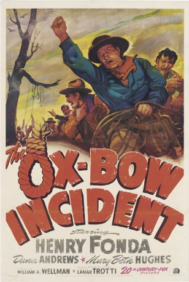
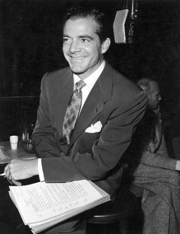
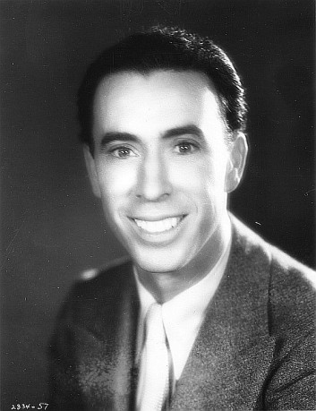
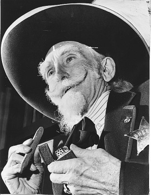
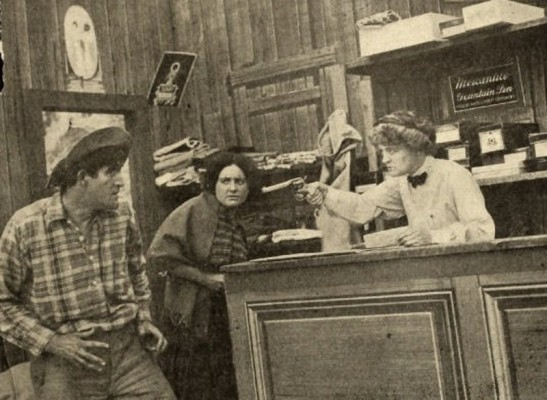
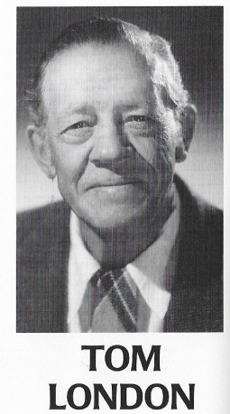

#1929 Ritt zum Ox-Bow
Alternativ: The Ox-Bow Incident
Auszeichnungen: für 1 Oscars nominiert
 
 IMDB-Wertung: 8.1 / 10
IMDB-Wertung: 8.1 / 10  Metascore: 0
Metascore: 0 
Ritt zum Ox-Bow ist ein Western von William A. Wellman mit Henry Fonda in der Hauptrolle. 1943, mitten im Zweiten Weltkrieg, galt die Botschaft des Filmes wie auch das abgeklärte Antiheldentum als ungewöhnlich für das Genre.
Jahr: 1943
Dauer: 75 Minuten
FSK: 12
Land: USA Studio: 20th Century FoxTonspuren: DTS - ,
Untertitel:
Auflösung: 1080p (1440x1080) Größe: 9400 MB
Genre: Drama, Krimi, Western
Regisseur: William A. Wellman
Drehbuch: Lamar Trotti, Walter Van Tilburg Clark
Soundtrack: Cyril J. Mockridge
Darsteller:
 Henry Fonda als Gil Carter
Henry Fonda als Gil Carter-  Dana Andrews als Donald Martin
- Mary Beth Hughes als Rose Mapen
 Anthony Quinn als Juan Martínez
Anthony Quinn als Juan Martínez- William Eythe als Gerald Tetley
 Harry Morgan als Art Croft
Harry Morgan als Art Croft Jane Darwell als Jenny Grier
Jane Darwell als Jenny Grier- Harry Davenport als Arthur Davies
 Marc Lawrence als Jeff Farnley
Marc Lawrence als Jeff Farnley- Margaret Hamilton als Mrs. Larch , uncredited
- Rondo Hatton als Gabe Hart , uncredited
- Matt Briggs als Judge Daniel Tyler
- Frank Conroy als Major Tetley
 Paul Hurst als Monty Smith
Paul Hurst als Monty Smith- Victor Kilian als Darby
 Chris-Pin Martin als Poncho
Chris-Pin Martin als Poncho- Willard Robertson als Sheriff Risley
- Ted North als Joyce
- C.E. Anderson als Posse Member , uncredited
 Stanley Andrews als Bartlett , uncredited
Stanley Andrews als Bartlett , uncredited Hank Bell als Red , uncredited
Hank Bell als Red , uncredited William 'Billy' Benedict als Green , uncredited
William 'Billy' Benedict als Green , uncredited Paul E. Burns als Winder , uncredited
Paul E. Burns als Winder , uncredited-  George Chandler als Jimmy Cairnes , uncredited
-  Tex Cooper als Posse Member , uncredited
- Forrest Dillon als Mark , uncredited
- Dan Dix als Posse Member , uncredited
- Larry Dods als Posse Member , uncredited
 Tex Driscoll als Posse Member , uncredited
Tex Driscoll als Posse Member , uncredited-  Francis Ford als Alva 'Dad' Hardwicke , uncredited
- Don House als Posse Member , uncredited
- George Lloyd als Moore , uncredited
-  Tom London als Deputy , uncredited
 Frank McGrath als Posse Member , uncredited
Frank McGrath als Posse Member , uncredited- George Meeker als Mr. Swanson , uncredited
- Frank Orth als Larry Kinkaid , uncredited
- George Plues als Alec Small , uncredited
- Dick Rich als Deputy Butch Mapes , uncredited
- Ed Richard als Posse Member , uncredited
- Walt Robbins als Posse Member , uncredited
- Almira Sessions als Miss Swanson , uncredited
- Clint Sharp als Posse Member , uncredited
- Ben Watson als Posse Member , uncredited
- Leigh Whipper als Sparks , uncredited
Datei: X:\HD-Western-1900-1959\Ritt zum Ox-Bow (1943, FSK12, 1440x1080).mkv seit 04.09.2015
Festplatte: HD Eastern+Western
 Es gibt insgesamt 98 Filme in der Gruppe 'HD-Western-1900-1959'
Es gibt insgesamt 98 Filme in der Gruppe 'HD-Western-1900-1959'